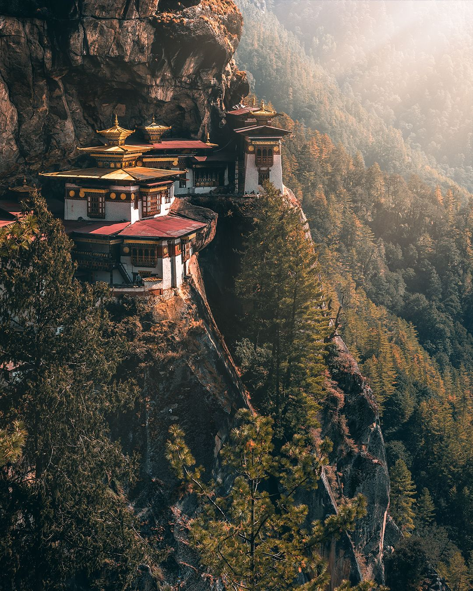
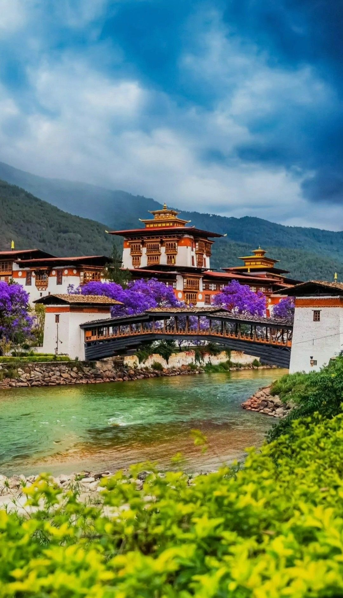
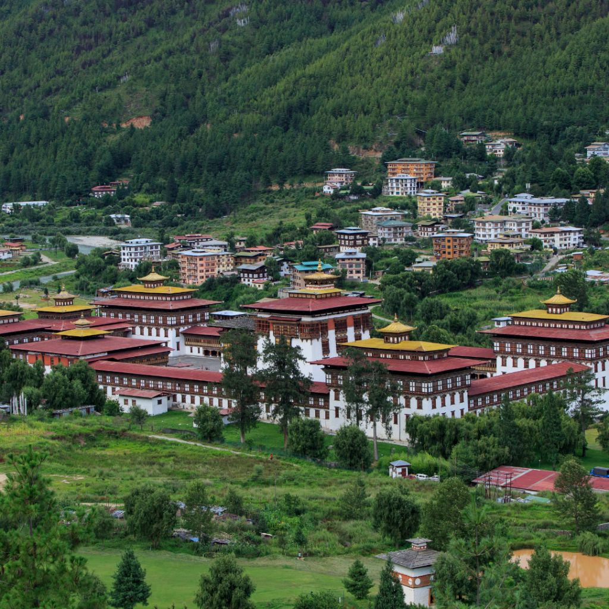
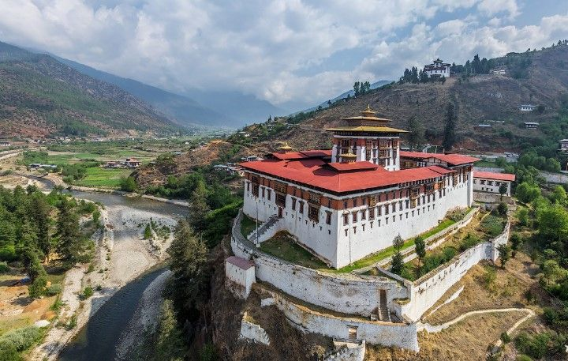
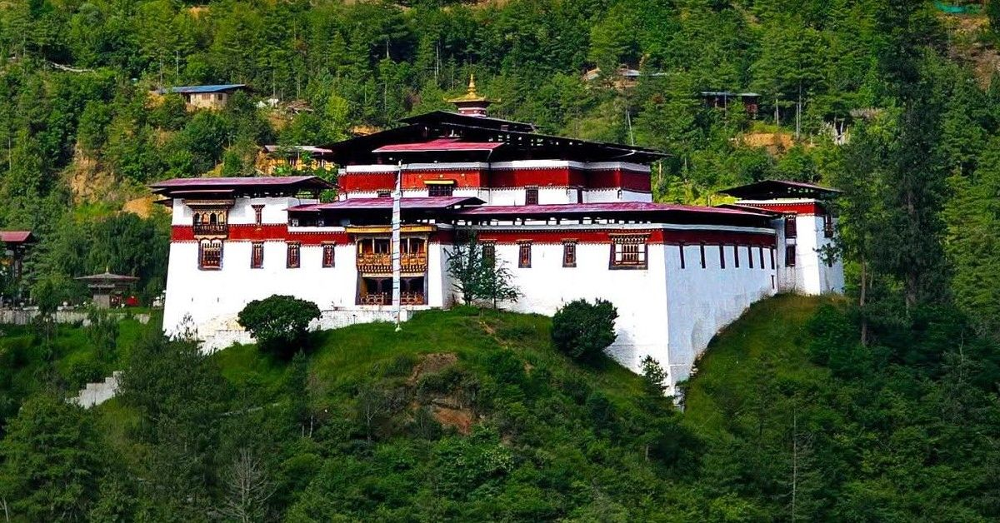
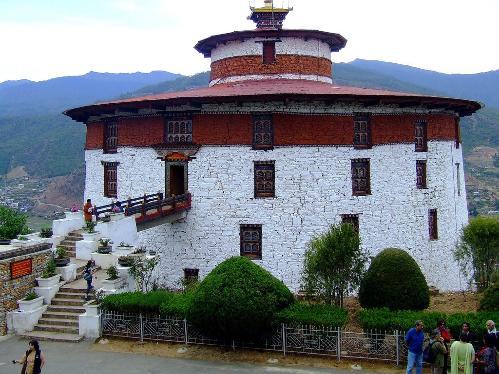
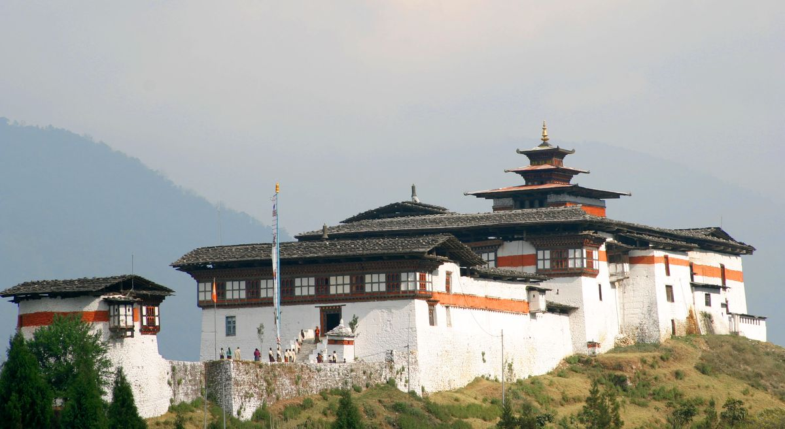
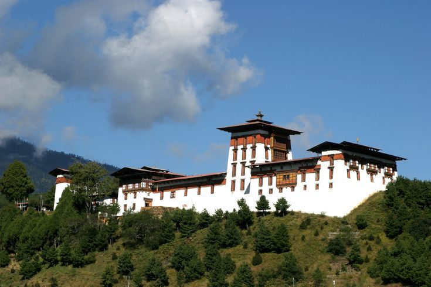

The most famous monastery in Bhutan, built on a cliff in Paro. It is a sacred meditation site of Guru Rinpoche.

One of the most beautiful dzongs in Bhutan, located between two rivers. It is an important religious and historical site.

Located in Thimphu, it is the seat of Bhutan’s government and monastic body.

A historic fortress-monastery in Paro known for its architecture and festivals.

One of the oldest dzongs in Bhutan, known for its religious importance and carvings.

Located in Paro, this museum was originally a watchtower built in 1649. It contains ancient weapons, traditional clothing, religious artifacts, and historical treasures of Bhutan.

Located in southern Bhutan, Dagana Dzong is an important administrative and religious center. Built in the 17th century, it features traditional Bhutanese architecture with beautiful temples and whitewashed walls.

Located in Bumthang valley, Jakar Dzong is known as the “Castle of the White Bird.” It is one of the largest dzongs in Bhutan and is famous for its peaceful surroundings and traditional Bhutanese architecture.